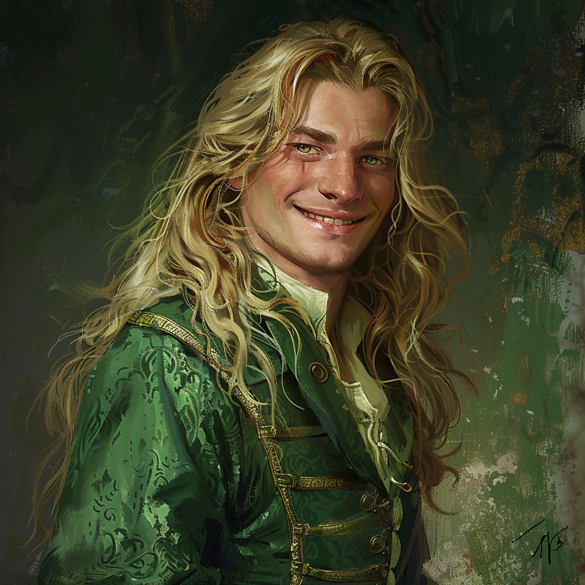

|  |
EscherEscher est l'un des vampires de la cour de Strahd von Zarovich. Escher était l'un des assaillants de Vallaki, d'un simple revers de main il a envouté une partie des gardes et les a retrouné contre nous. Après l'attaque de la ville, Escher nous a proposer un marché, il souhaite que nous traquions Rudolf van Richten et que nous le tuons. Il souhaite vanger la mort de ses rejetons, qu'il semble considéré comme ses propres enfants. |